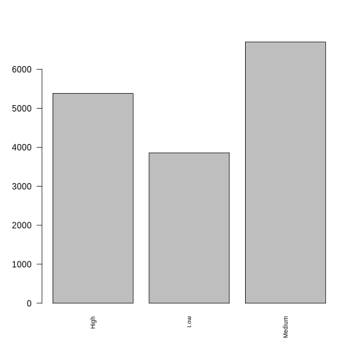
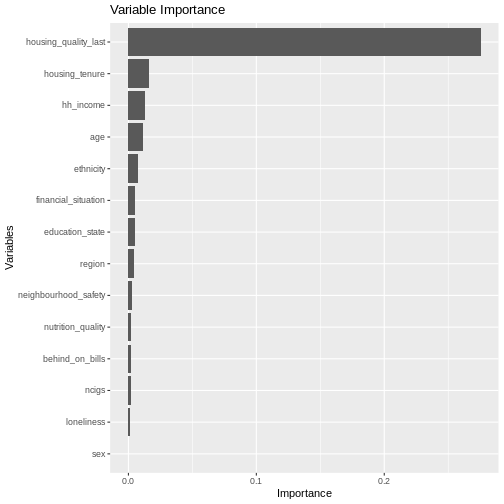
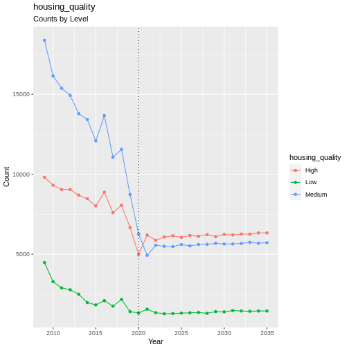
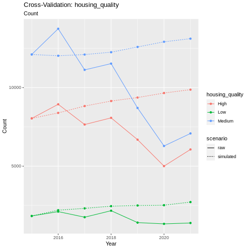
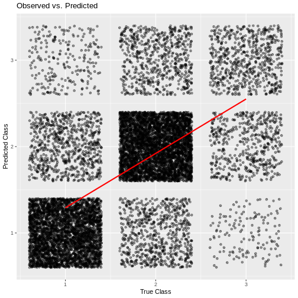

Housing Quality
Housing Quality is one of the pathways outlined by the SIPHER consortium that mediates the impact of changes in household disposable income on mental wellbeing. It is based on the presence of consumer durable items in a household, as well as the ability to adequately heat the household.
Information on the variables involved:
fridge_freezer (cduse5)
washing_machine (cduse6)
tumble_dryer (cduse7)
dishwasher (cduse8)
microwave (cduse9)
heating (hheat)
The housing_quality composite variable is based on the presence of a set of factors, separated into a core set and a bonus set. Variables in the core set are access to a fridge freezer, a washing machine, and being able to adequately heat your home. The bonus set includes access to a dishwasher, microwave, and tumble dryer. We chose this distinction for 2 reasons; firstly the number of households without access to items in the core set is much smaller than those without access to the bonus set, and secondly because the bonus items can be considered more of a choice, and do not necessarily represent lower housing quality if they are not present. For example, some households will not have a microwave by choice, which does not necessarily indicate poorer housing quality and certainly not in the same way that having no access to a fridge freezer would indicate lower quality. See table below for the core and bonus groupings:
Core |
Bonus |
|---|---|
Fridge Freezer |
Dishwasher |
Washing Machines |
Tumble Dryer |
Adequate Heating |
Microwave |
The housing_quality composite is defined as:
Missing 1+ core == 1
All core some bonus == 2
All core all bonus == 3
IMPORTANT NOTE: Unfortunately, one of the core components of this
composite is not present in every wave of the survey - heating. This
caused us a major problem, as the way the pathways are devised we need
at least one wave with all pathway variables present, so we can fit a
transition model for SF-12. Because of this, we decided to forward fill
the heating variable before generating the housing_quality
composite variable. As heating is a fairly static variable (highest
transition rate between years is 6%, mean 4.5%) we believe this is a
justified decision. Please see the heating module documentation page for
more information on this (specifically under the heading “Justification
for Forward Fill”.

plot of chunk housing_barchart
Transition Model
We use a Random Forest Ordinal model from the ranger package in R to estimate transitions for this variable.
Formula:
Predictor |
Description |
Li terature/Justification |
|---|---|---|
Previous Housing Quality |
||
Age |
(Whelan and Maitre 2012) |
|
Sex |
(Whelan and Maitre 2012) |
|
Ethnicity |
(Whelan and Maitre 2012) |
|
Region |
||
Education |
(Whelan and Maitre 2012) |
|
Neighbourhood Safety |
(Whelan and Maitre 2012) |
|
Loneliness |
||
Nutrition Quality |
||
Tobacco Consumption |
Count of cigarettes smoked per week |
|
Household Income |
(Waters and Wernham 2023) |
|
Housing Tenure |
Ordinal variable for tenure type e.g. Owned outright, Local authority rent |
(Whelan and Maitre 2012) (Waters and Wernham 2023) |
Behind on Bills |
Subjective feeling of struggling to pay bills |
|
Financial Situation |
Ordinal variable for current subjective financial situation |
|
SF-12 MCS |
Mental wellbeing |
(Whelan and Maitre 2012) |
plot_rfo_importance(model)

plot of chunk housing_model_summary
Validation
handover_ordinal(raw.dat, base.dat, v)

plot of chunk housing_validation
hous.pivoted <- combine_and_pivot_long(df1 = cv,
df1.name = 'simulated',
df2 = raw,
df2.name = 'raw',
var = 'housing_quality')
cv_ordinal_plots(pivoted.df = hous.pivoted,
var = 'housing_quality',
save = FALSE)
## `summarise()` has grouped output by 'time', 'scenario'. You can override using
## the `.groups` argument.

plot of chunk housing_cv
Results
Random Forest Ordinal models from the ranger package cannot provide a summary like some other models can, so instead we will look at plots of observed vs predicted values as well as the importance of each variable in the resulting model.

plot of chunk housing_output
cumulative_link_plot(obs, preds)
## `geom_smooth()` using formula = 'y ~ x'

plot of chunk housing_performance
References
Waters, Tom, and Thomas Wernham. 2023. “Housing Quality and Affordability for Lower-Income Households.” IFS Report.
Whelan, Christopher T, and Bertrand Maitre. 2012. “Understanding Material Deprivation: A Comparative European Analysis.” Research in Social Stratification and Mobility 30 (4): 489–503.